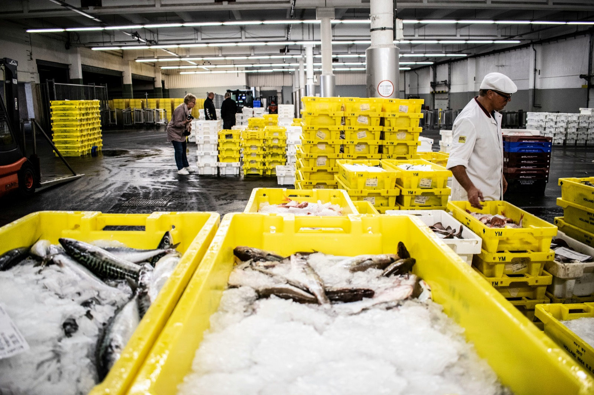
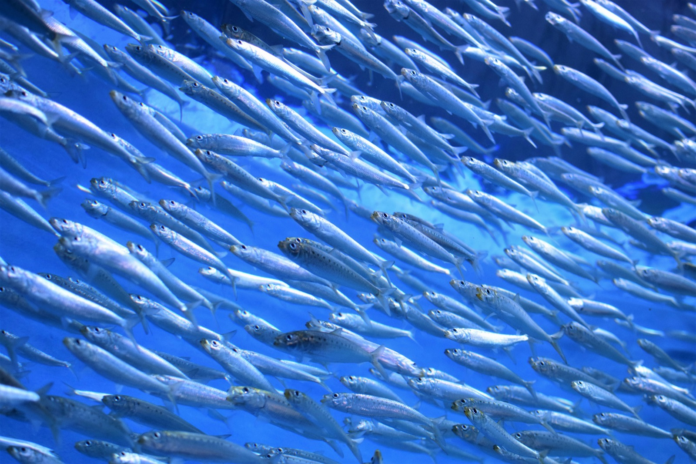
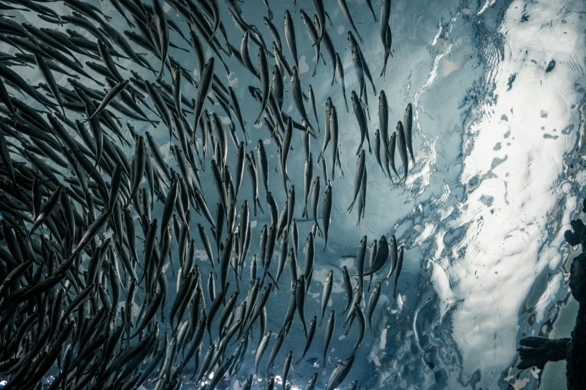

[OCEANMART]
산지 직송으로 신선함을 그대로, 위판장 시세를 실시간으로 소비자와 공유하는 수산물 유통 브랜드
OCEANMART는 동해안 수산물 유통사로, 실시간 재고·시세 데이터를 소비자와 공유해 신뢰를 쌓고 재구매율을 크게 끌어올렸습니다.
자세히보기선도 소진 알림을 실시간으로 받아보세요.
알림 설정하기 →
어종 등록
어종·상품을 카드 하나로 등록하세요.
0원으로 시작
기본형은 무료, 결제형은 필요할 때만.
0원
재고관리로
이어져요
입고·경매·정산까지 계속 관리돼요.
84%
선도 유지율
12건
오늘 입고

[OCEANMART]
산지 직송으로 신선함을 그대로, 위판장 시세를 실시간으로 소비자와 공유하는 수산물 유통 브랜드
OCEANMART는 동해안 수산물 유통사로, 실시간 재고·시세 데이터를 소비자와 공유해 신뢰를 쌓고 재구매율을 크게 끌어올렸습니다.
자세히보기[TIDALCATCH]
그날 잡은 활어를 그날 안에, 오늘의 어획량을 소비자에게 투명하게 안내하는 수산물 유통 브랜드
TIDALCATCH는 활어 유통 브랜드로, 매일 입고량과 잔여 재고를 자동 공지해 폐기율을 낮추고 주문 전환율을 높였습니다.
자세히보기
[BLUEWAVE]
냉동 창고에서 식탁까지, 신선도를 잃지 않고 이어지는 콜드체인 수산물 유통 브랜드
BLUEWAVE는 냉동수산물 유통 브랜드로, 입고 즉시 알림을 보내는 사전예약 주문 페이지로 신선도 클레임을 줄였습니다.
자세히보기수산물 유통 브랜드를 위한 노코드 주문·재고 관리 페이지 빌더입니다. 코딩 없이 5분이면 나만의 주문 페이지를 만들 수 있어요.
네, 별도 개발자 없이 5분이면 주문 페이지를 무료로 오픈할 수 있어요.
네, FRESHLINE이 발급하는 링크 하나로 매장 정보와 메뉴를 모두 안내할 수 있고, 주소도 원하는 대로 설정할 수 있어요.
네, 매장이나 브랜드별로 여러 페이지를 만들어 각각 관리할 수 있어요.
정산은 자동으로 처리되며, 등록하신 계좌로 매주 정기 입금됩니다.
결제형 이용 시에만 표준 PG 수수료가 부과되며, 기본형은 수수료가 없습니다.